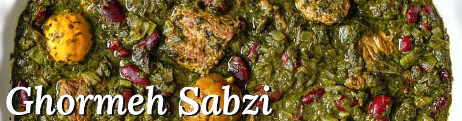
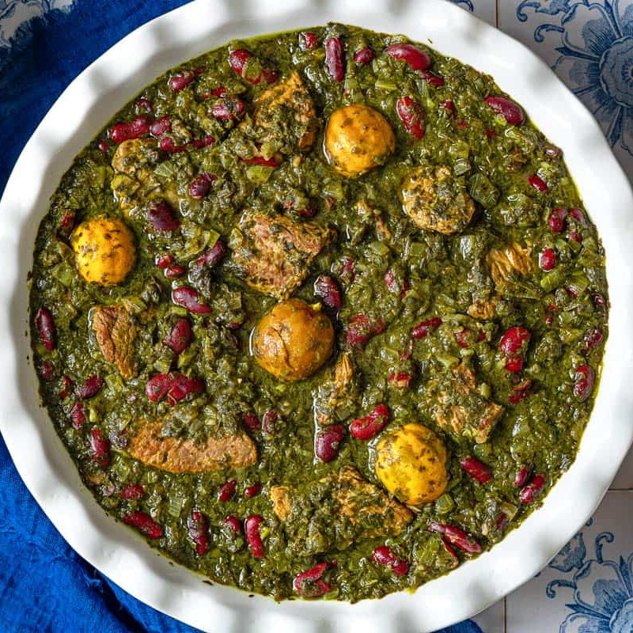

Odin's Recipes
Ghormeh Sabzi

Description
Ghormeh sabzi is deliciously savory and loaded with the flavors of several different green herbs. It's traditionally served atop white rice (polow). You can also serve it with lavash bread.
Ingredients
- ¼ cup canola oil, divided
- 1 large yellow onion, finely chopped
- 1 teaspoon ground turmeric
- 1 ½ pounds boneless chuck roast, cut into 1 1/2-inch cubes
- 1 ½ cups finely chopped spinach
- 1 cup finely chopped green onions (green part only)
- ½ cup finely chopped Italian flat-leaf parsley
- ¼ cup finely chopped cilantro
- ¼ cup finely chopped chives
- ¼ cup finely chopped fenugreek leaves
- 1 ½ cups water, or more as needed
- salt and ground black pepper to taste
- 1 lemon, juiced
- 4 dried Persian limes (limoo amani), or more to taste
- 1 (15 ounce) can red kidney beans, drained and rinsed
Cooking Steps
- Heat 2 tablespoons oil in a large pot over medium-high heat. Add onion; cook and stir until deep golden brown, 10 to 15 minutes. Stir in turmeric for 1 to 2 minutes.
- Add chuck cubes; cook until coated in turmeric and browned on all sides, 8 to 10 minutes.
- Heat remaining 2 tablespoons oil in a separate pot over medium heat. Add spinach, green onions, parsley, cilantro, chives, and fenugreek leaves; cook and stir until deep dark green in color, 5 to 10 minutes.
- Stir spinach mixture into onion and chuck mixture. Pour in enough water to create a slurry consistency. Season with salt and pepper. Stir in lemon juice. Reduce heat, cover, and simmer stew until greens soften, about 1 hour.
- Pierce dried limes with a fork; add to stew.
- Continue simmering until chuck is tender, 30 minutes to 1 hour. Stir in red kidney beans. Cook until flavors combine, about 30 more minutes.
- Discard dried limes before serving.
